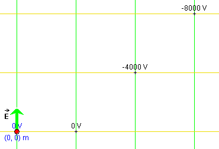
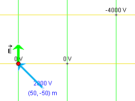

Instructions
This page is designed to get you started using the applet. The applet should be open. The step-by-step instructions on this page are to be done in the applet. You may need to toggle back and forth between instructions and applet if your screen space is limited.
 Field Lines and Equipotential
Lines
Field Lines and Equipotential
Lines
 Initial Position and
Displacement
Initial Position and
Displacement
 Potential Energy and
Electric Potential
Potential Energy and
Electric Potential

RESET  the applet.
the applet.
Exercise 1. Construct the set of green field lines and mustard-colored equipotential lines shown in Figure 1 below as follows.
Display the Grid by selecting the Grid button  . Then
select the Coordinates button
. Then
select the Coordinates button  ,
and place location markers at
,
and place location markers at
Each time a marker is placed, click the Field-Line button
 to draw the green field line through the field
point and the Equipotential-Line button
to draw the green field line through the field
point and the Equipotential-Line button  to draw the mustard-colored
equipotential line through the field point.
to draw the mustard-colored
equipotential line through the field point.
Then hide the Grid by clicking the Grid button again, and deselect the Coordinates button. Move the particle to (x,y) = (0,0). The applet window should display the pattern shown in Figure 1 below.

Figure 1
Hint. You may want to hold the SHIFT key down while moving the particle to its exact position, to restrict the direction of motion to horizontal or vertical. The (x,y)-coordinates of the particle are displayed in the Data box. The motion of a location marker can be similarly restricted.
Exercise 2. Select the Coordinates button again, move the mouse pointer to one of the existing location markers, click on the marker and drag it.
The pair of field and equipotential lines through the marker should move along with the marker. Note how the value of the electric potential V at the point changes as you drag the point.
Exercise 3. Deselect the Coordinates button. Then click on the tip of the green electric field vector and drag it.
Observe how the field lines and equipotential lines through the fixed field points change so that the field lines stay parallel to the electric field vector and the equipotential lines perpendicular to the field lines.
If you want to continue directly with Exercise 1 in the following section, make no further changes to the applet.

Exercise 1. Restore the applet to the state shown in Figure 1 above. If you are continuing directly from the previous Exercise 3, you have to do two things:
When this is done correctly, the electric potentials along the three displayed equipotential lines should be 0 V, -4000 V, and -8000 V, when going in the positive y direction. These values will be shown in scientific notation, to three significant digits. Note that the notation "4.00E3" stands for "4.00×103".
Exercise 2. Continue with the applet from the end of Exercise 1. This means the applet is in the state shown in Figure 1 above, with the particle at (x,y) = (0,0) and (Ex,Ey) = (0,40) V/m.
Display the particle's displacement vector by selecting the
Vectors button  . This will display a panel on which
you can select the displacement vector.
. This will display a panel on which
you can select the displacement vector.
If you never clicked the Initial button  since last resetting the applet, you should see the
image shown in Figure 2 below.
since last resetting the applet, you should see the
image shown in Figure 2 below.

Figure 2
In Figure 2, the particle's default position at (x,y) = (50,-50) m is indicated.
The blue displacement vector goes from the particle's default position to the particle's current position at (x,y) = (0,0).
Exercise 3. Continue with the state of the applet as you
left it in Exercise 2. Now click the Initial button .
The blue displacement vector should disappear. However, if you drag the particle with the mouse, the displacement vector will reappear, this time with its tail end at the location occupied by the particle when the Set-Initial-Position button was clicked, which in this case is the origin.
Click the Initial button again when the particle is not at the origin, and then drag the particle some more. The displacement vector should be drawn from the location where the particle was when the Initial button was clicked.
Exercise 4. Continue with the applet from Exercise 3, and display the Energy box. Drag the particle again, and observe the energy column labeled "final". It gets adjusted during the dragging so that the potential energy column always represents the potential energy at the current particle position. The energy column labeled "initial" remains unchanged. It shows the particle's kinetic and potential energies at the moment the Initial button was clicked last.
Now click the Initial button, and observe the change in the "initial" energy column.
You should find that the "initial" column gets adjusted to be identical to the "final" column. The current value of the potential energy has become the new initial value.
RESET the applet.
Exercise 1. The Data box should be displayed automatically upon Reset. Drag the particle to the coordinate origin, (x,y) = (0,0). The origin is located at the tail-end of the green electric field vector. The particle's current (x,y)-coordinates are displayed in the Data box. The Data box also shows the particle's potential energy in the electric field, PE, and the potential V at the particle's location.
When the particle is at (x,y) = (0,0), both PE and V should be displayed as zero in the Data box. In the Energy box, the bar reprenting V should stop at the zero level, which is indicated by the horizontal line across all three bars. Similarly, the PE column in the bar labeled "final" should have its top at the zero level. The particle's kinetic energy, KE, is represented by the red portion of the bar above the potential energy.
Exercise 2. Continuing from Exercise 1, click the Initial button. The energy bar labeled "initial" should get adjusted to look like the bar labeled "final".
Make sure the following settings are still in place:
Select the Trace toggle button, and PLAY the motion. Observe the changes in the columns in the Energy box during the motion. PAUSE the motion at some point.
The particle should be moving on a parabolic path curving upward. As the particle is moving upward, both its potential energy, as indicated by the blue column in the "final" energy bar, and the potential at the particle's location, as indicated by the mustard-colored bar, should be decreasing. The values of these two quantities can also be observed in the Data box.
The particle's total energy should remain constant, as indicated by the fact that the "final" energy bar maintains the same total height as the "initial" bar throughout the motion. The only change during the motion is in the composition of the "final" bar: the potential energy portion becomes smaller and the kinetic energy portion becomes larger.
Click REWIND and then PLAY to observe this again.
Exercise 3. Continuing from Exercise 2, click REWIND. Then reverse the sign of the charge so that q = -2 C instead of q = 2 C. Then PLAY the motion.
This time the parabolic trajectory will curve downward. Again, the potential energy should be decreasing during the motion while the electric potential should be increasing. PAUSE the motion before the particle leaves the applet window.
Exercise 4. Resume the paused motion from Exercise 3 by clicking PLAY again, and continue the motion until the bar representing V has grown beyond the height of the Energy box. PAUSE the motion again.
Now pull the Energy Zoom Slider in the Energy box downward, to decrease the scale of the energy bars. The top of the V-bar should come back into view and so should the top of the PE-column. Resume the motion once more, and drag the Energy Zoom Slider further downward.
If you keep the motion running, the top ends of the potential bar and of the potential energy column will be above and below the applet window, respectively, and therefore unobservable. However, you can continue to observe the values of the potential and of the potential energy, as well as those of other quantities, in the Data box and in the Velocity data fields.